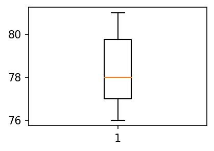
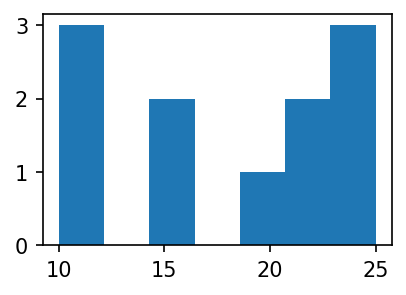

import matplotlib.pyplot as plt
import numpy as np
#!pip install opencv-python
import cv2 01wk-1: 박스플랏, 히스토그램
matplotlib
seaborn
plotnine
plotly
박스플랏, 히스토그램

강의영상
Import
import matplotlib
matplotlib.rcParams['figure.figsize'] = (3, 2) # 가로 6, 세로 4 크기의 그림
matplotlib.rcParams['figure.dpi'] = 150Boxplot
motivating example
- 통계란?
- 평균 좋아해요?
# 예제1 – 전북고등학교: 평균은 좋은 측정값인가?
- 전북고등학교에서 통계학을 수업하는 A선생님과 B선생님의 있다.
y1=[75,75,76,76,77,77,78,79,79,98] # A선생님에게 통계학을 배운 학생의 점수들
y2=[76,76,77,77,78,78,79,80,80,81] # B선생님에게 통계학을 배운 학생의 점수들 - 어떤반이 더 공부를 잘할까?, 누가 더 잘 가르칠까?
np.mean(y1)79.0np.mean(y2)78.2- 의사결정: A선생님에게 배운 학생들의 평균이 더 높다. -> A선생님이 더 강의를 잘 하셨다?
- 반론: 평균은 A반(=A선생님에게 통계학을 배운 반)이 더 높다. 그런데 98점을 받은 학생이 A반에 포함되어서 A반이 전체평균이 높게 나온것이고 나머지 학생들은 전체적으로 B반 학생들이 더 시험을 잘 보았다고 해석할 수 있다.
- 교훈: 단순한 평균비교보다 학생들이 받은 점수의 분포를 비교해보는 것이 중요하다. 분포를 살펴보는 방법 중 유용한 방법이 박스플랏이다.
#
matplotlib으로 boxplot 그리기
- A반 학생들의 박스플랏 그리기
plt.boxplot(y1);
- B반 학생들의 박스플랏 그리기
plt.boxplot(y2);
- A반 학생들의 점수와 B반 학생들의 점수를 나란히 박스플랏으로 그리자.
plt.boxplot([y1,y2]);boxplot이란?
- Galarnyk (2023)
Galarnyk, Michael. 2023. “Python_tutorials.” https://github.com/mGalarnyk/Python_Tutorials.
Code
np.random.seed(916170)
# connection path is here: https://stackoverflow.com/questions/6146290/plotting-a-line-over-several-graphs
mu, sigma = 0, 1 # mean and standard deviation
s = np.random.normal(mu, sigma, 1000)
fig, axes = plt.subplots(nrows = 1, ncols = 1, figsize=(10, 5))
# rectangular box plot
bplot = axes.boxplot(s,
vert=False,
patch_artist=True,
showfliers=True, # This would show outliers (the remaining .7% of the data)
positions = [0],
boxprops = dict(linestyle='--', linewidth=2, color='Black', facecolor = 'red', alpha = .4),
medianprops = dict(linestyle='-', linewidth=2, color='Yellow'),
whiskerprops = dict(linestyle='-', linewidth=2, color='Blue', alpha = .4),
capprops = dict(linestyle='-', linewidth=2, color='Black'),
flierprops = dict(marker='o', markerfacecolor='green', markersize=10,
linestyle='none', alpha = .4),
widths = .3,
zorder = 1)
axes.set_xlim(-4, 4)
plt.xticks(fontsize = 14)
axes.set_yticks([])
axes.annotate(r'',
xy=(-.73, .205), xycoords='data',
xytext=(.66, .205), textcoords='data',
arrowprops=dict(arrowstyle="|-|",
connectionstyle="arc3")
);
axes.text(0, .25, "Interquartile Range \n(IQR)", horizontalalignment='center', fontsize=18)
axes.text(0, -.21, r"Median", horizontalalignment='center', fontsize=16);
axes.text(2.65, -.15, "\"Maximum\"", horizontalalignment='center', fontsize=18);
axes.text(-2.65, -.15, "\"Minimum\"", horizontalalignment='center', fontsize=18);
axes.text(-.68, -.24, r"Q1", horizontalalignment='center', fontsize=18);
axes.text(-2.65, -.21, r"(Q1 - 1.5*IQR)", horizontalalignment='center', fontsize=16);
axes.text(.6745, -.24, r"Q3", horizontalalignment='center', fontsize=18);
axes.text(.6745, -.30, r"(75th Percentile)", horizontalalignment='center', fontsize=12);
axes.text(-.68, -.30, r"(25th Percentile)", horizontalalignment='center', fontsize=12);
axes.text(2.65, -.21, r"(Q3 + 1.5*IQR)", horizontalalignment='center', fontsize=16);
axes.annotate('Outliers', xy=(2.93,0.015), xytext=(2.52,0.20), fontsize = 18,
arrowprops={'arrowstyle': '->', 'color': 'black', 'lw': 2},
va='center');
axes.annotate('Outliers', xy=(-3.01,0.015), xytext=(-3.41,0.20), fontsize = 18,
arrowprops={'arrowstyle': '->', 'color': 'black', 'lw': 2},
va='center');
- 가장 큰 값이 100%, 가장 작은 값이 0%, 중간값이 50%
boxplot을 언제 쓰면 좋을까?
- 박스플랏의 장점: 단순히 평균을 주는 것보다 데이터를 파악하고 직관을 얻기에 유리하다.
- 박스플랏이 이용되는 범위:
- 첫 데이터 분석때 자료 분포를 파악하기 용이
- Kaggel등의 대회참여시, 두 개 이상의 모형의 성능을 비교
Histogram
motivating example
- 전북고예제에서 우리의 소망: “A반 B반 중에 어떤 반이 공부를 더 잘하냐?”, “A선생님과 B선생님 중 어떤 분의 강의가 효과적이었다고 평할 수 있는가?” 와 같은 단순한 질문에 대한 대답
- 보통 이러한 질문은 중심경향값 중 하나를 골라서 비교하면 되었다.
- 여기에서 중심경향값이란 데이터 분포의 중심을 보여주는 값으로 자료 전체를 대표할 수 있는 값을 말함. 평균, 중앙값등이 대표적인 중심경향값이다.
- 전북고예제에서는 “A반 B반 중에서 어떤 반이 공부를 더 잘하냐?” 라는 질문의 대답으로 단순평균비교로는 의미가 없었다. 오히려 결과론적으로 보면 중앙값이 더 타당해 보인다.
- 그런데 사실 생각해보면 중앙값을 기준으로 B반이 공부를 더 잘했다고 주장하는 것도 애매하다. 어쨌든 가장 공부잘한 학생은 A반에 있으니까!
- 에이 한명 뿐이잖아요? 라고 생각할 수 있는데 그 한명이 2명 3명으로 점점 늘어난다고 생각해보자, 합리적인 기준을 제시할 수 있는가?
- 그리고 A반을 지도한 선생님이 영재를 지도하는데 특화된 선생님일수도 있잖아요?
- 사실 “A반 B반중에 누가 더 공부를 잘하냐?” 라는 질문은 굉장히 대답하기 곤란한 질문이다. 왜냐하면
- 이슈1: 단순 평균비교로 이러한 질문에 답을 하기 어렵다.
- 이슈2: 박스플랏으로 전체분포를 파악해도 어떠한 반이 더 공부를 잘한다는 기준을 잡는게 애매하다.
- 그런데 특수한 경우에는 “A반 B반중에 누가 더 공부를 잘하냐?” 라는 질문에 대한 대답을 깔끔하게 할 수 있다.
# 예제2 – 정규분포 전북고등학교: 평균은 좋은 측정값인가?
- A반과 B반의 통계학 성적이 아래와 같다고 하자.
np.random.seed(43052)
y1 = np.random.randn(10000)
y2 = np.random.randn(10000) + 0.5 np.mean(y1),np.mean(y2)(-0.011790879905079434, 0.4979147460611458)np.mean(y2) - np.mean(y1)0.5097056259662253y2의 값이 y1의 값보다 전체적으로 0.5097056259662253 정도 높다고 볼 수 있다?
plt.boxplot([y1,y2]);- 분포의 모양이 거의 비슷, 왼쪽그림을 컨트롤+C 하여 오른쪽에 붙인다음 0.5정도 y축으로 올린느낌이다!
- 여기에서는 “B반의 성적 \(\approx\) A반의 성적 + 0.5” 라고 주장해도 큰 무리가 없어보인다. 따라서 이 경우에는 “A반 B반 중에 어떤반이 더 공부를 잘하냐?” 라는 질문에 대하여 “B반이 평균적으로 0.5점정도 더 공부를 잘합니다” 라고 대답해도 괜찮다.
- 이 예제에서는 우연히 극단적인 학생이 없었음.
- 그렇지만 혹시 극단적인 학생이 나온다면? 걱징X. 너무 극단적인 값이 많이 나오면 정규분포가 아님 + 만약에 어떠한 반에서 극단적인 학생이 나온다면 똑같은 확률로 다른반 역시 그러한 극단적 학생이 나올 것
- 결론: 정규분포 분포가정을 한다면 이슈1,2에 대한 문제를 한번에 해결가능 함
#
- 정규분포가정은 어떻게 할 수 있나? (= 데이터를 보고 어떻게 정규분포라고 알 수 있는가?): 데이터의 히스토그램을 그려서 종 모양이 되는지 확인해본다.1
1 아직 초보단계라서 이것밖에 모를 수 있어요
histogram 이란?
- 히스토그램: X축이 변수의 구간, Y축은 그 구간에 포함된 빈도를 의미하는 그림
histogram 그리기
- 히스토그램의 예시1 – 기본플랏, ;으로 결과 생략하기
y=[10,11,12,15,16,20,21,22,23,24,25]plt.hist(y)(array([2., 1., 0., 1., 1., 0., 1., 1., 2., 2.]),
array([10. , 11.5, 13. , 14.5, 16. , 17.5, 19. , 20.5, 22. , 23.5, 25. ]),
<BarContainer object of 10 artists>)plt.hist(y,bins=10)(array([2., 1., 0., 1., 1., 0., 1., 1., 2., 2.]),
array([10. , 11.5, 13. , 14.5, 16. , 17.5, 19. , 20.5, 22. , 23.5, 25. ]),
<BarContainer object of 10 artists>)
- 히스토그램 예시2 – bins 옵션이용
plt.hist(y,bins=3)(array([3., 2., 6.]),
array([10., 15., 20., 25.]),
<BarContainer object of 3 artists>)
- 히스토그램 예시3 – bins=3 옵션의 결과값 해석
plt.hist(y,bins=3)(array([3., 2., 6.]),
array([10., 15., 20., 25.]),
<BarContainer object of 3 artists>)- 가장 큰 값은 25, 가장 작은 값은 10이므로 range는 15이다.
- range / bins = 15 / 3 = 5 이므로 각 구간의 간격은 5이다.
- 구간은 [10,15), [15,20), [20,25] 로 나눈다.
- 각 구간에 포함된 자료의 수는 3,2,6 이다.
- 히스토그램 예시4 – bins=7 옵션의 결과값 해석
plt.hist(y,bins=7) (array([3., 0., 2., 0., 1., 2., 3.]),
array([10. , 12.14285714, 14.28571429, 16.42857143, 18.57142857,
20.71428571, 22.85714286, 25. ]),
<BarContainer object of 7 artists>)
- 가장 큰 값은 25, 가장 작은 값은 10이므로 range는 15이다.
- range / bins = 15 / 7 = 2.142857142857143 이므로 각 구간의 간격은 2.142857142857143이다.
- 구간은 [10,12.14285714), [12.14285714,14.28571429,), [22.85714286,25] 로 나눈다.
- 각 구간에 포함된 자료의 수는 3,0,2,0,1,2,3 이다.
- 히스토그램 예시5 – range 옵션
plt.hist(y,bins=7,range=[0,30]) # range를 변경하면 --> 구간도 달라짐(array([0., 0., 3., 2., 2., 4., 0.]),
array([ 0. , 4.28571429, 8.57142857, 12.85714286, 17.14285714,
21.42857143, 25.71428571, 30. ]),
<BarContainer object of 7 artists>)- 히스토그램 예시6 – 나란히 그리기
np.random.seed(43052)
y1 = np.random.randn(10000)
y2 = np.random.randn(10000) + 0.5
plt.hist([y1,y2],bins=100);Histogram equalization
예비학습1: 이미지자료 다운로드
- ref: https://en.wikipedia.org/wiki/Histogram_equalization
!wget https://upload.wikimedia.org/wikipedia/commons/0/08/Unequalized_Hawkes_Bay_NZ.jpg
img = cv2.imread('Unequalized_Hawkes_Bay_NZ.jpg')
!rm Unequalized_Hawkes_Bay_NZ.jpg--2023-09-04 11:59:07-- https://upload.wikimedia.org/wikipedia/commons/0/08/Unequalized_Hawkes_Bay_NZ.jpg
Resolving upload.wikimedia.org (upload.wikimedia.org)... 103.102.166.240, 2001:df2:e500:ed1a::2:b
Connecting to upload.wikimedia.org (upload.wikimedia.org)|103.102.166.240|:443... connected.
HTTP request sent, awaiting response... 200 OK
Length: 110895 (108K) [image/jpeg]
Saving to: ‘Unequalized_Hawkes_Bay_NZ.jpg’
Unequalized_Hawkes_ 100%[===================>] 108.30K 572KB/s in 0.2s
2023-09-04 11:59:07 (572 KB/s) - ‘Unequalized_Hawkes_Bay_NZ.jpg’ saved [110895/110895]
!wget 주소: 주소에 있는 이미지를 다운로드!rm 파일이름: 현재폴더에 “파일이름”을 삭제
plt.imshow(img)<matplotlib.image.AxesImage at 0x7f52f5c70ed0>
- 다운받은 이미지를 보는 방법
예비학습2: 이미지자료의 이해
비밀1: 이미지는 사실 숫자들의 집합이었음.
- 예시1 – 2d array = 흑백이미지
_img1 = np.array([0,30,90,120,150,180,210,240,255]).reshape(3,3)
_img1array([[ 0, 30, 90],
[120, 150, 180],
[210, 240, 255]])plt.imshow(_img1,cmap='gray')
plt.colorbar()<matplotlib.colorbar.Colorbar at 0x7f385a14c450>
- 예시2 – 2d array = 흑백이미지
_img2 = np.array([0,20,40,60,80,100,120,140,160]).reshape(3,3)
_img2array([[ 0, 20, 40],
[ 60, 80, 100],
[120, 140, 160]])plt.imshow(_img2,cmap='gray',vmin=0,vmax=255)
plt.colorbar()<matplotlib.colorbar.Colorbar at 0x7f385a04e590>
- 예시3 – 나란히 그리기
_img3 = np.concatenate([_img1,_img2],axis=1)
_img3array([[ 0, 30, 90, 0, 20, 40],
[120, 150, 180, 60, 80, 100],
[210, 240, 255, 120, 140, 160]])plt.imshow(_img3,cmap='gray')<matplotlib.image.AxesImage at 0x7f3859fda8d0>
비밀2: 칼라이미지는 red + green + blue 의 조합으로 표현가능 (다른방식도 가능)
- ref: https://en.wikipedia.org/wiki/RGB_color_model

- 예시1 – 3d array = 칼라이미지
r = np.array(
[[ 0, 0, 0, 0, 0],
[ 0, 0, 0, 0, 0],
[255, 255, 255, 255, 255],
[255, 255, 255, 255, 255],
[255, 255, 255, 255, 255]]
)
g = np.array(
[[255, 255, 255, 0, 0],
[255, 255, 255, 0, 0],
[255, 255, 255, 0, 0],
[ 0, 0, 0, 0, 0],
[ 0, 0, 0, 0, 0]]
)
b = np.array(
[[ 0, 0, 255, 255, 255],
[ 0, 0, 255, 255, 255],
[ 0, 0, 255, 255, 255],
[ 0, 0, 0, 0, 0],
[ 0, 0, 0, 0, 0]]
)
z = np.array(
[[ 0, 0, 0, 0, 0],
[ 0, 0, 0, 0, 0],
[ 0, 0, 0, 0, 0],
[ 0, 0, 0, 0, 0],
[ 0, 0, 0, 0, 0]]
) red = np.stack([r,z,z],axis=-1)
green = np.stack([z,g,z],axis=-1)
blue = np.stack([z,z,b],axis=-1)plt.imshow(red)<matplotlib.image.AxesImage at 0x7f1c17b5a010>
plt.imshow(green)<matplotlib.image.AxesImage at 0x7f1c17909ed0>
plt.imshow(blue)<matplotlib.image.AxesImage at 0x7f1c178b1a10>
plt.imshow(red+green+blue)<matplotlib.image.AxesImage at 0x7f1c176f1ed0>
- 예시2: R,G,B를 같은 비율로 섞으면 다시 흑백이미지가 된다.
arr2 = np.array(
[[10, 40],
[80, 60]]
)
arr2array([[10, 40],
[80, 60]])arr3 = np.stack([arr2,arr2,arr2],axis=-1)
plt.imshow(arr3)<matplotlib.image.AxesImage at 0x7f52ef74a550>
plt.imshow(arr2,cmap='gray',vmin=0,vmax=255)
plt.colorbar()<matplotlib.colorbar.Colorbar at 0x7f52ef5011d0>
히스토그램 이퀄라이제이션
- 우리가 관심있었던 이미지
plt.imshow(img)<matplotlib.image.AxesImage at 0x7fd835dd4890>
- 이미지를 rgb로 각각 분리하고 각 색깔들의 히스토그램을 그려보자.
r = img[:,:,0]
g = img[:,:,1]
b = img[:,:,2]plt.hist(r.reshape(-1),range=(0,255),bins=255);- 120-200 사이에 값이 몰려있음
- 만약에 120-200까지의 분포된 모양은 그대로 유지하면서 range를 0-255 까지 늘린다면?
- cv2.equalizeHist()를 이용하여 분포의 모양은 대략적으로 유지하면서 값을 퍼트리자!
rr = cv2.equalizeHist(r)
gg = cv2.equalizeHist(g)
bb = cv2.equalizeHist(b)plt.hist(r.reshape(-1),bins=255, range=[0,255],label='befor');
plt.hist(rr.reshape(-1),bins=255,range=[0,255],label='after');
plt.legend()<matplotlib.legend.Legend at 0x7f52ef3197d0>
- 변환이후의 이미지를 그려본다면?
img2 = np.stack([rr,gg,bb],axis=-1)plt.imshow(img2)<matplotlib.image.AxesImage at 0x7f52ce3a3810>
plt.imshow(np.concatenate([img,img2],axis=1))<matplotlib.image.AxesImage at 0x7f52cde1b290>
숙제
- HE(Histogram Equalization)을 이용하여 아래주소에 저장된 이미지의 명암비를 보정하라
{kind=link}
- 힌트: 아래는 위의 주소의 이미지를 다운로드 하여 img라는 numpy array로 저장한것 이다.
!wget https://raw.githubusercontent.com/guebin/2021DV/master/_notebooks/hw_img.png
img = cv2.imread('hw_img.png')
!rm hw_img.png--2023-09-04 18:50:51-- https://raw.githubusercontent.com/guebin/2021DV/master/_notebooks/hw_img.png
Resolving raw.githubusercontent.com (raw.githubusercontent.com)... 185.199.109.133, 185.199.111.133, 185.199.108.133, ...
Connecting to raw.githubusercontent.com (raw.githubusercontent.com)|185.199.109.133|:443... connected.
HTTP request sent, awaiting response... 200 OK
Length: 120618 (118K) [image/png]
Saving to: ‘hw_img.png’
hw_img.png 100%[===================>] 117.79K --.-KB/s in 0.01s
2023-09-04 18:50:55 (10.8 MB/s) - ‘hw_img.png’ saved [120618/120618]
- 아래는 다운로드한 이미지를 시각화한 결과이다.
plt.imshow(img)<matplotlib.image.AxesImage at 0x7f1c17711ed0>